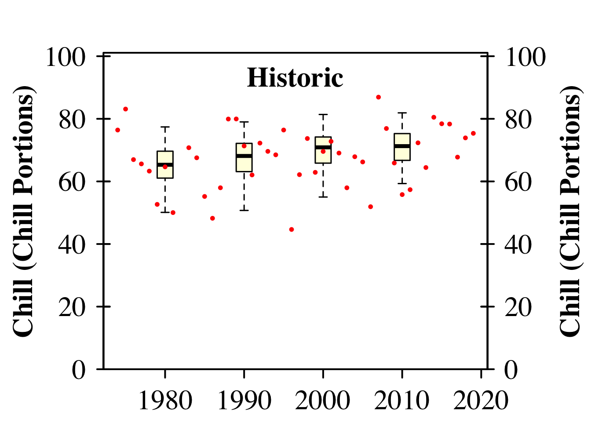
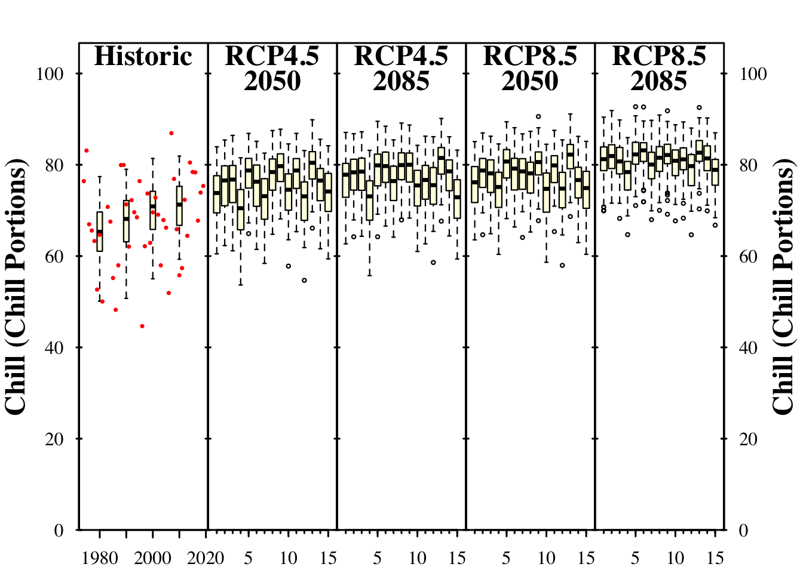
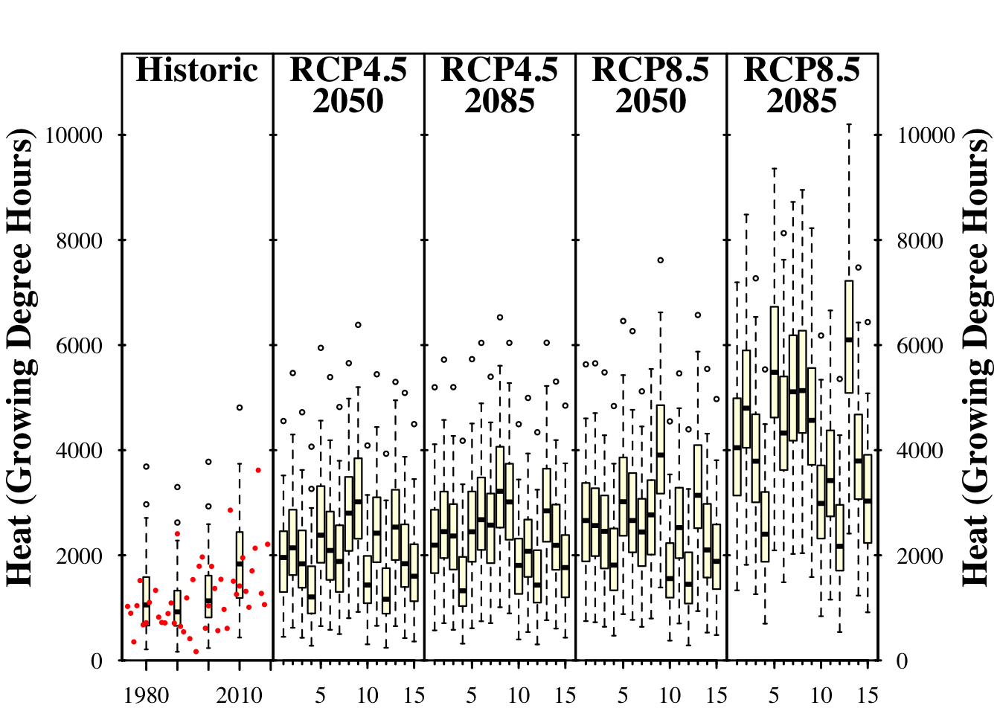
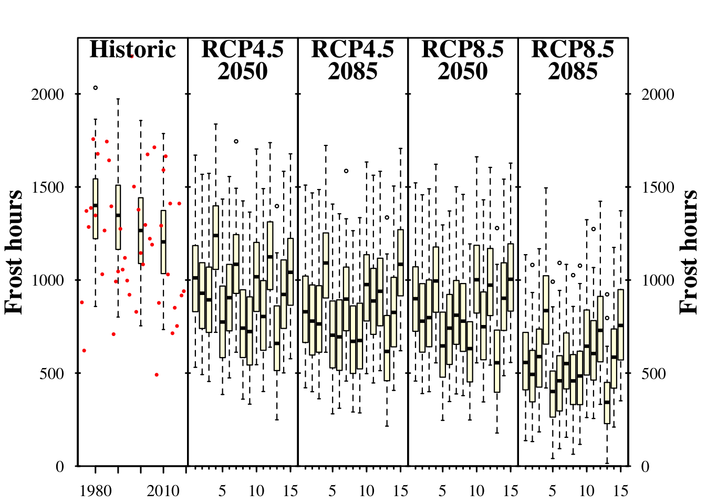

Chapter 12 Future Temperature Scenarios
12.1 Task 1
Analyze the historic and future impact of climate change on three agroclimatic metrics of your choice, for the location you’ve chosen for your earlier analyses.
Up until now, historical temperature scenarios have been created based on different years. Currently, there are many models that provide future climate data. Here, the ClimateWizard model developed by Dr. Evan Girvetz is used. This model can be accessed through an API, allowing for corresponding climate data to be downloaded. Currently, there is no function for simultaneously loading multiple RCPs. Therefore, a for loop is used in this case.
It should also be noted that the ClimateWizard requires a data base over a 20 year period between 1950 and 2005. Therefore, our previously generated data must be adjusted. Here, the period from 1975 to 2005, contained in the complementary data set from Leszno, is chosen. Afterwards, the climate scenario is saved.
#dir.create("weather_data/Leszno_weather_raw/ClimateWizard_Leszno")
# RCPs<-c("rcp45","rcp85")
# Times<-c(2050,2085)
# for(RCP in RCPs)
# for (Time in Times)
# {
# start_year <- Time - 15
# end_year <- Time + 15
# clim_scen <- getClimateWizardData(
# c(longitude = 16.580, latitude = 51.851),
# RCP,
# start_year,
# end_year,
# temperature_generation_scenarios = TRUE,
# baseline = c(1975, 2005),
# metric = "monthly_min_max_temps",
# GCMs = "all"
# )
# save_temperature_scenarios(clim_scen,
# "weather_data/Leszno_weather_raw/ClimateWizard_Leszno",
# paste0("Leszno_futures_", Time, "_", RCP))
# }
scenario_1990 =
temperature_scenario_from_records(Leszno_Sc_temps,1990)
scenario_1996 =
temperature_scenario_from_records(Leszno_Sc_temps,1996)
adjustment_scenario =
temperature_scenario_baseline_adjustment(scenario_1996,scenario_1990)
#dir.create("weather_data/Leszno_weather_raw/Leszno_")
RCPs<-c("rcp45","rcp85")
Times<-c(2050,2085)
#
# for(RCP in RCPs)
# for(Time in Times)
# {
# clim_scen<-load_ClimateWizard_scenarios(
# "weather_data/Leszno_weather_raw/ClimateWizard_Leszno",
# paste0("Leszno_futures_",Time,"_",RCP))
# clim_scen_adjusted<-
# temperature_scenario_baseline_adjustment(
# baseline_temperature_scenario=adjustment_scenario,
# temperature_scenario=clim_scen)
# Temps<-temperature_generation(
# weather=Leszno_Sc_temps,
# years=c(1973,2019),
# sim_years=c(2001,2101),
# temperature_scenario = clim_scen_adjusted)
#
# save_temperature_scenarios(
# Temps,
# "weather_data/Leszno_weather_raw/Leszno_",
# paste0("Leszno_",Time,"_",RCP))
# }all_past_scenarios =
temperature_scenario_from_records(
weather=Leszno_Sc_temps,
year=c(1980,1990,2000,2010))
adjusted_scenarios =
temperature_scenario_baseline_adjustment(
baseline=scenario_1996,
temperature_scenario = all_past_scenarios)
# all_past_scenario_temps<-temperature_generation(
# weather=Leszno_Sc_temps,
# years=c(1973,2019),
# sim_years=c(2001,2101),
# temperature_scenario = adjusted_scenarios)
# save_temperature_scenarios(
# all_past_scenario_temps,
# "weather_data/Leszno_weather_raw",
# "Leszno_historic")
frost_model =
function(x) step_model(x,data.frame(
lower=c(-1000,0),
upper=c(0,1000),
weight=c(1,0)))
models =
list(Chill_CP=Dynamic_Model,Heat_GDH=GDH,Frost_H=frost_model)
Temps=
load_temperature_scenarios("weather_data/Leszno_weather_raw","Leszno_historic")
# chill_past_scenarios = tempResponse_daily_list(
# Temps,
# latitude=51.39,
# Start_JDay = 305,
# End_JDay = 59,
# models=models,
# misstolerance = 10)
# chill_observed<-tempResponse_daily_list(
# Leszno_Sc_temps,
# latitude=51.39,
# Start_JDay = 305,
# End_JDay = 59,
# models=models,
# misstolerance = 10)
# save_temperature_scenarios(chill_past_scenarios,
# "weather_data/Leszno_weather_raw/chill",
# "Leszno_historic")
# save_temperature_scenarios(chill_observed,
# "weather_data/Leszno_weather_raw/chill",
# "Leszno_observed")
chill_past_scenarios =
load_temperature_scenarios(
"weather_data/Leszno_weather_raw/chill",
"Leszno_historic")
chill_observed =
load_temperature_scenarios(
"weather_data/Leszno_weather_raw/chill",
"Leszno_observed")
chills =
make_climate_scenario(
chill_past_scenarios,
caption = "Historic",
historic_data = chill_observed,
time_series = TRUE)
plot_climate_scenarios(
climate_scenario_list=chills,
metric="Chill_CP",
metric_label="Chill (Chill Portions)")
## [[1]]
## [1] "time series labels"# for(RCP in RCPs)
# for(Time in Times)
# {
# Temps<-load_temperature_scenarios(
# "weather_data/Leszno_weather_raw/Leszno_",
# paste0("Leszno_",Time,"_",RCP))
# chill<-tempResponse_daily_list(
# Temps,
# latitude=51.39,
# Start_JDay = 305,
# End_JDay = 59,
# models=models,
# misstolerance = 10)
# save_temperature_scenarios(
# chill,
# "weather_data/Leszno_weather_raw/chill",
# paste0("Leszno_",Time,"_",RCP))
# }
for(RCP in RCPs)
for(Time in Times)
{
chill<-load_temperature_scenarios(
"weather_data/Leszno_weather_raw/chill",
paste0("Leszno_",Time,"_",RCP))
if(RCP=="rcp45") RCPcaption <- "RCP4.5"
if(RCP=="rcp85") RCPcaption <- "RCP8.5"
if(Time=="2050") Time_caption <- "2050"
if(Time=="2085") Time_caption <- "2085"
chills <-make_climate_scenario(
chill,
caption =c(RCPcaption, Time_caption),
add_to = chills)
}
alpha =
plot_climate_scenarios(
climate_scenario_list=chills,
metric="Chill_CP",
metric_label="Chill (Chill Portions)",
texcex=1.5)
beat =
plot_climate_scenarios(
climate_scenario_list=chills,
metric="Heat_GDH",
metric_label="Heat (Growing Degree Hours)",
texcex=1.5)
gamma =
plot_climate_scenarios(
climate_scenario_list=chills,
metric="Frost_H",
metric_label="Frost hours",
texcex=1.5)